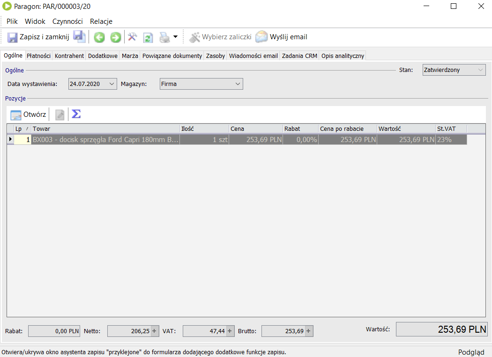
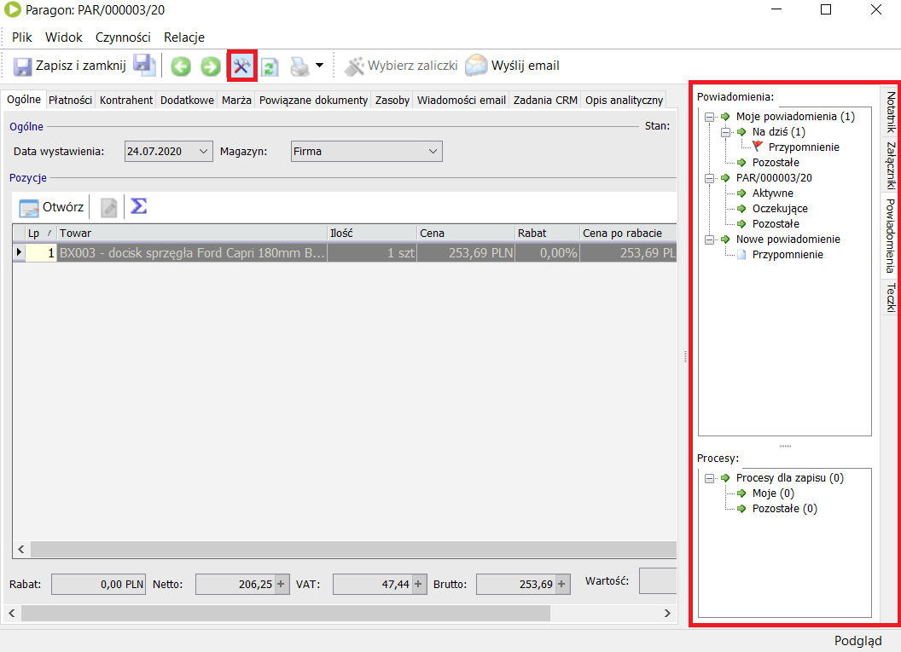
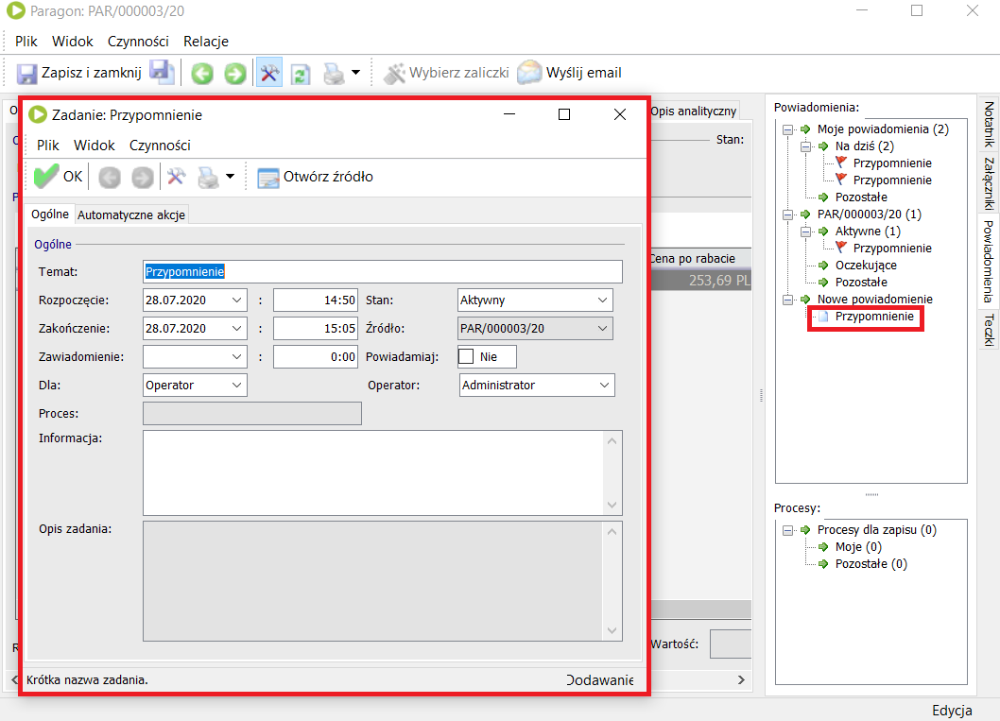
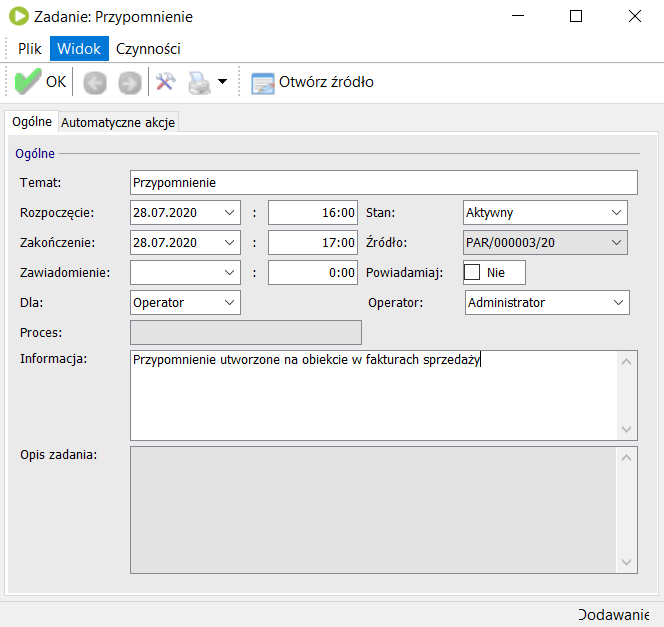
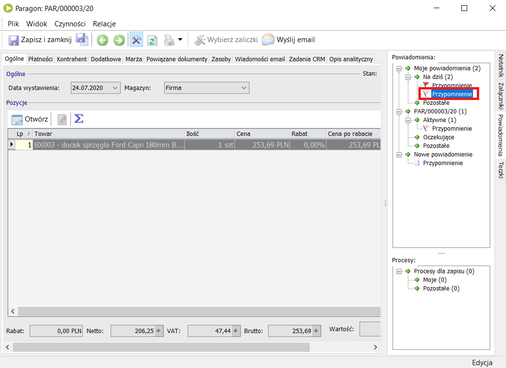
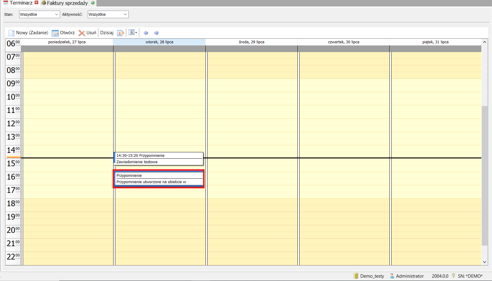
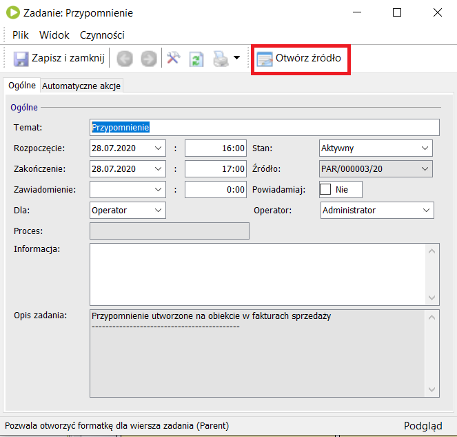

Powiadomienia na obiekcie
Istnieje też możliwość tworzenia powiadomień w każdym innym obiekcie Enovy.
Przykładowo wejdźmy na faktury sprzedaży, następnie wejdźmy w jakąś fakturę.

Na górnym pasku widoczna jest ikona skrzyżowanego młotka z kluczem. Klikając w nią wyświetli się nam dodatkowe okienko po prawej stronie. Następnie klikamy w zakładkę powiadomienia.

W naszym oknie powinny być widoczne 3 zakładki.
- Moje powiadomienia
- (Nazwa obiektu na którym jesteśmy)
- Nowe powiadomienie
W zakładce 'Moje powiadomienia' będą wyświetlane wszystkie powiadomienia które zostały utworzone dla nas.
W zakładce o nazwie obiektu na którym się znajdujemy będą widoczne wszystkie powiadomienia dotyczące tego obiektu.
W zakładce 'Nowe powiadomienia' jesteśmy w stanie utworzyć nowe powiadomienie w ten sam sposób jaki został przedstawiony wcześniej klikając w pozycję 'Przypomnienie'.

Po wypełnieniu pól i kliknięciu 'OK' nasz nowo utworzone powiadomienie zostanie wyświetlone w zakładce 'Moje powiadomienia' oraz w kalendarzu Terminarza.



Na koniec mamy też możliwość wejścia w miejsce źródłowe z którego zostało utworzone powiadomienie. Aby się do niego dostać wchodzimy w dane powiadomienie na formularzu i klikamy 'Otwórz źródło'.
